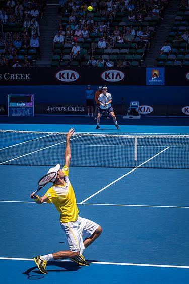
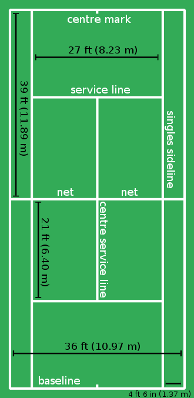
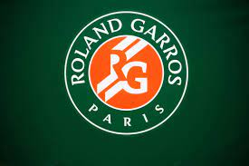
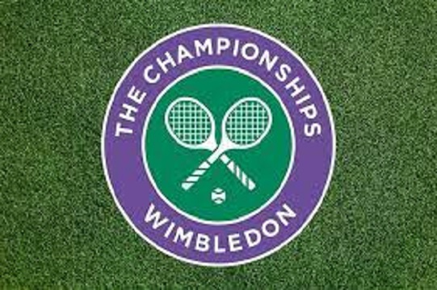
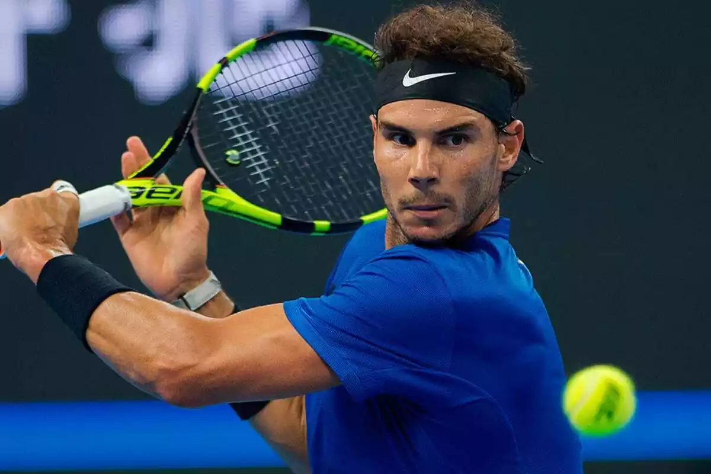
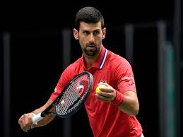
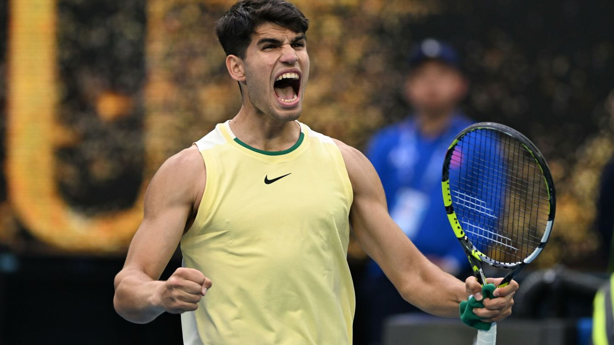
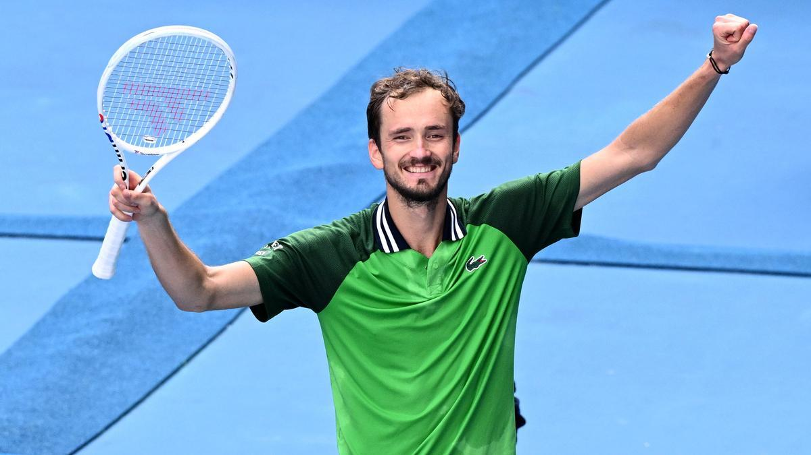

Introduction
Tennis is a racket sport that is played either individually against a single opponent (singles) or between two teams of two players each (doubles). Each player uses a tennis racket that is strung with cord to strike a hollow rubber ball covered with felt over or around a net and into the opponent's court. The object of the game is to manoeuvre the ball in such a way that the opponent is not able to play a valid return. The player who is unable to return the ball validly will not gain a point, while the opposite player will.

Court
Tennis is played on a rectangular, flat surface. The court is 78 feet (23.77 m) long, and 27 feet (8.2 m) wide for singles matches and 36 ft (11 m) for doubles matches.[67] Additional clear space around the court is required in order for players to reach overrun balls. A net is stretched across the full width of the court, parallel with the baselines, dividing it into two equal ends. It is held up by either a cord or metal cable of diameter no greater than 0.8 cm . The net is 3 feet 6 inches (1.07 m) high at the posts and 3 feet (0.91 m) high in the centre. The net posts are 3 feet (0.91 m) outside the doubles court on each side or, for a singles net, 3 feet (0.91 m) outside the singles court on each side.

Grand Slams
Australian Open
The Australian Open is chronologically the first of the four official tournaments that make up the tennis Grand Slam.
Official Page

Roland Garros
It is an official tennis tournament that makes up the Grand Slam. It has been played since its inauguration in 1891.
Official Page

Wimbledon
The Wimbledon Championship is the oldest official tennis tournament in the world and is considered the most prestigious.
Official PageUs Open
Known as the United States National Championship, it is chronologically the fourth and final official Grand Slam tennis tournament of the season.
Official PagePlayers





Shots
A serve (or, more formally, a "service") in tennis is a shot to start a point. The serve is initiated by tossing the ball into the air and hitting it (usually near the apex of its trajectory) into the diagonally opposite service box without touching the net. The serve may be hit under- or overhand although underhand serving remains a rarity.If the ball hits the net on the first serve and bounces over into the correct diagonal box then it is called a "let" and the server gets two more additional serves to get it in. There can also be a let if the server serves the ball and the receiver isn't prepared. If the server misses his or her first serve and gets a let on the second serve, then they get one more try to get the serve in the box.
For a right-handed player, the forehand is a stroke that begins on the right side of the body, continues across the body as contact is made with the ball, and ends on the left side of the body. There are various grips for executing the forehand, and their popularity has fluctuated over the years. The most important ones are the continental, the eastern, the semi-western, and the western.
For right-handed players, the backhand is a stroke that begins on the left side of their body, continues across their body as contact is made with the ball, and ends on the right side of their body. It can be executed with either one hand or with both and is generally considered more difficult to master than the forehand. For most of the 20th century, the backhand was performed with one hand, using either an eastern or a continental grip. The first notable players to use two hands were the 1930s Australians Vivian McGrath and John Bromwich, but they were lone exceptions. The two-handed grip gained popularity in the 1970s as Björn Borg, Chris Evert, Jimmy Connors, and later Mats Wilander and Marat Safin used it to great effect, and it is now used by a large number of the world's best players, including Novak Djokovic, Rafael Nadal and Serena Williams
A volley is a shot returned to the opponent in mid-air before the ball bounces, generally performed near the net, and is usually made with a stiff-wristed punching motion to hit the ball into an open area of the opponent's court
The half volley is made by hitting the ball on the rise just after it has bounced, also generally in the vicinity of the net, and played with the racket close to the ground. The swinging volley is hit out of the air as the player approaches the net. It is an offensive shot used to take preparation time away from the opponent, as it returns the ball into the opponent's court much faster than a standard volley.
From a poor defensive position on the baseline, the lob can be used as either an offensive or defensive weapon, hitting the ball high and deep into the opponent's court to either enable the lobber to get into better defensive position or to win the point outright by hitting it over the opponent's head.
If the lob is not hit deeply enough into the other court, however, an opponent near the net may then hit an overhead smash, a hard, serve-like shot, to try to end the point.
If their opponent is deep in their court, a player may suddenly employ an unexpected drop shot, by softly tapping the ball just over the net so that the opponent is unable to run in fast enough to retrieve it. Advanced players will often apply back spin to a drop shot, causing the ball to "skid" upon landing and bounce sideways, with less forward momentum toward their opponent, or even backwards towards the net, thus making it even more difficult to return.